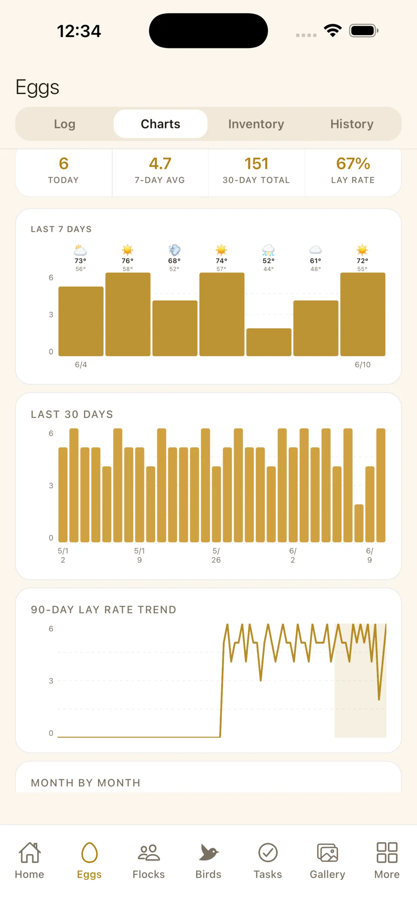
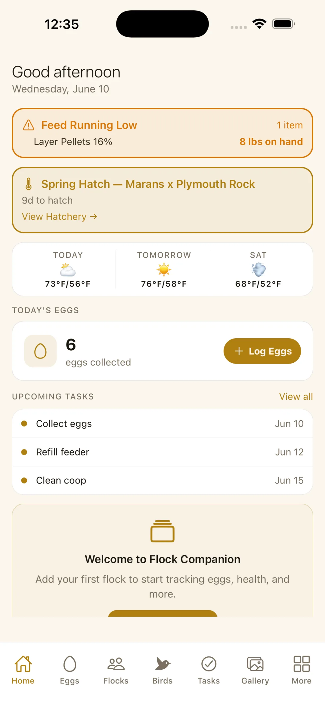
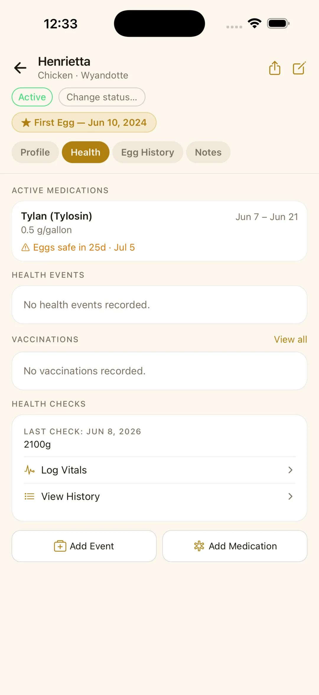
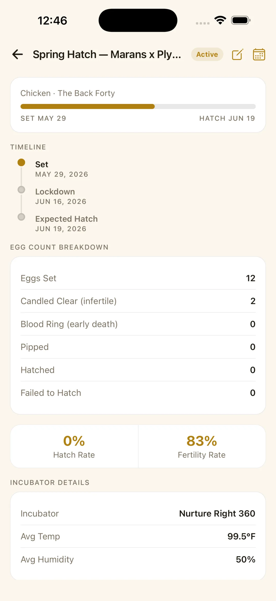
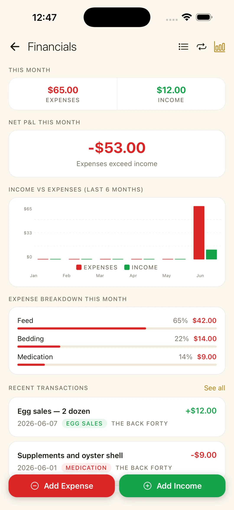
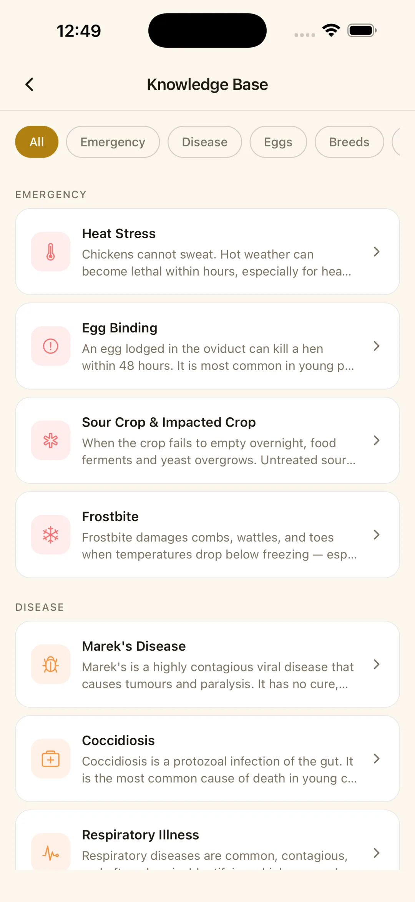
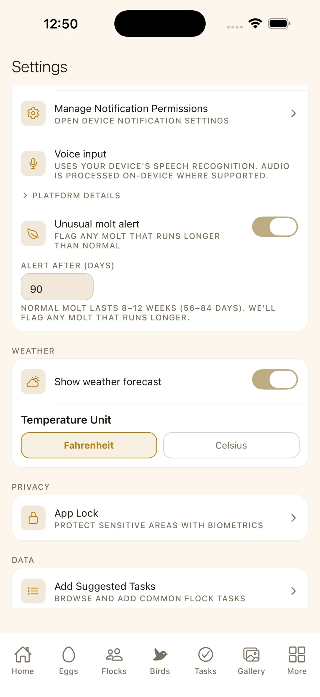

Flock management for backyard chicken, duck, quail, and turkey keepers. Track your birds, log eggs in seconds, watch incubations to hatch day, and keep medication withdrawal dates straight — all stored on your device.



The short version, in plain terms.
Everything a backyard keeper juggles, in one calm app — swipe through a few of the screens.




Chickens, ducks, quail, turkeys — the things you actually need to remember, in one tidy place.
Tap in today's eggs and watch 7- and 30-day production charts so you can spot a slow week before it becomes a problem. Pro adds 90-day and year-over-year trends.
Photo, breed, sex, hatch date, leg band, and a tidy health history for every bird in the flock.
Log a medication and the app counts down the egg-withdrawal period, so you never eat an egg you shouldn't.
Track an incubation batch from set through lockdown to hatch day, with the countdowns that keep a hatch on schedule.
Weigh egg sales against feed and supply costs with a simple running picture of your flock's finances.
A reference for common conditions, breeds, and seasonal care — there when you need an answer, no searching the web.
The free version isn't a trial. It's the complete daily app, with no time limit and no account.
The store shows your local price. Pro is a one-time purchase, not a subscription.
Most apps in this space want an account, then quietly use your data to sell ads. Flock Companion does the opposite — it's built privacy-first, by one person, because what's in your coop is your business.
There's no sign-up and no server holding your information. The app works fully offline. It only goes online for three optional things: checking a Pro purchase, a weather forecast if you turn it on (approximate location to Open-Meteo, which doesn't keep it), and voice-to-text if you use it.
Flock Companion is a private flock-management app for backyard poultry keepers, on iPhone, iPad and Android. It tracks your birds, daily egg collection, health and medications (with egg-withdrawal countdowns), coop, feed and tasks. Pro adds incubation and hatching. Everything is stored on your device, and there's no account.
Yes, this is one. Flock Companion is free to download and use, with no time limit. The optional Pro unlock is a one-time purchase ($9.99 in the US). There are no monthly or yearly fees.
Chickens, ducks, quail, turkeys, guinea fowl, geese, pigeons, peafowl, doves and pheasants, with breeds and egg colours built in.
Free covers day-to-day keeping: unlimited birds, egg logging with 7- and 30-day charts, health and medication records, egg-withdrawal countdowns, coop, feed, tasks, PDF bird reports, the journal, document vault and knowledge base. Pro adds the hatchery (incubation and hatching), breeding records, 90-day and year-over-year egg trends, financial reports with cost per egg, journal photos and CSV export.
Yes. Log each day's collection in a few taps, with count, colour, size and notes. You get production charts, lay rate, and an egg inventory showing what was sold, used or given away.
When you give a bird medication, eggs often shouldn't be eaten for a set period afterward. Log the medication and Flock Companion counts down that withdrawal window for you, so you never eat an egg you shouldn't.
Yes, with Pro. Set up an incubation batch and Flock Companion follows it from set through lockdown to hatch day, with a countdown for each stage, then records how the hatch went.
Log feed, supplies and other costs alongside egg sales and other income, and the free version keeps running totals. Pro adds full financial reports, P&L summaries and cost per egg.
No. There's no sign-up, no email, no password. You open the app and your records live on your device from the first tap.
Your records are stored only on your phone or tablet, not on a server. To move to a new phone, export a backup file from Settings and restore it on the new device.
Yes, fully. It only goes online for three optional things: checking a Pro purchase with the app store, a weather forecast if you turn weather on (your approximate location goes to Open-Meteo, which doesn't keep it), and voice-to-text if you use it.
Yes. It's on the App Store for iPhone and iPad, and on Google Play for Android.
I do. I'm Taur, and Taur Studios is my one-person studio. I build private, no-account apps for people who keep animals, including Equine Companion, Goat Companion and Homestead Companion. Questions and ideas go to taurstudios@gmail.com.
Free on iOS and Android. No account, no ads, no tracking — just your birds.